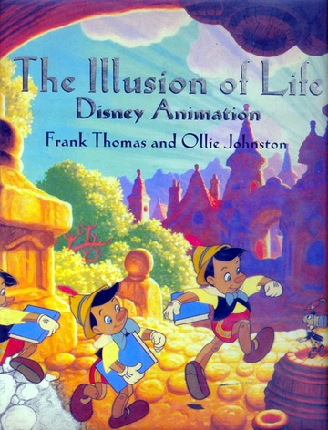

There are 12 total principles of animation many professional animation studios follow.
These principles were made by Ollie Johnston and Frank Thomas, two Disney professional animators in 1981.
Arguably, the two of the most fundemental principles of animation are the first and the ninth principle.
Below is the book that the 12 principles were originally written in.
